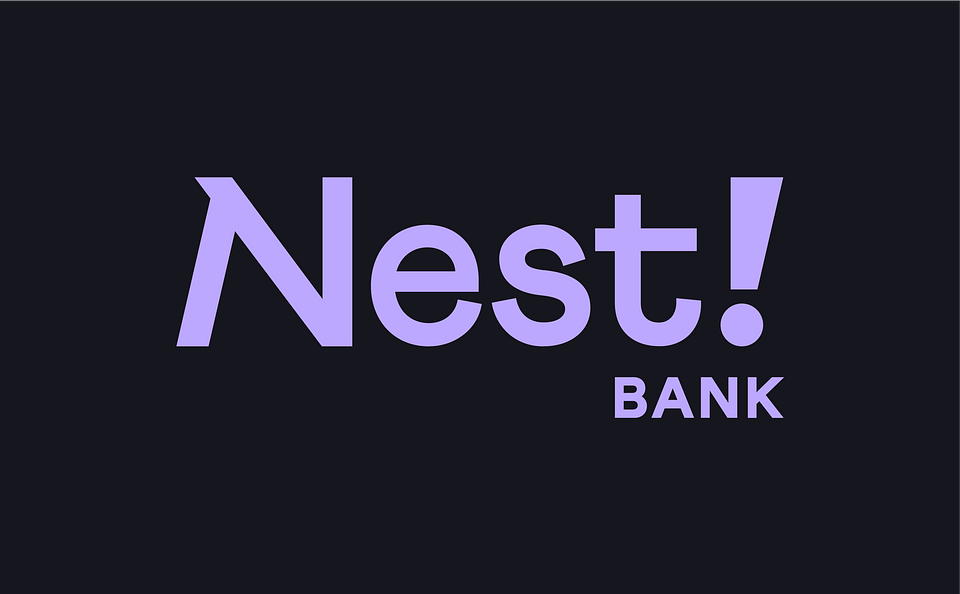
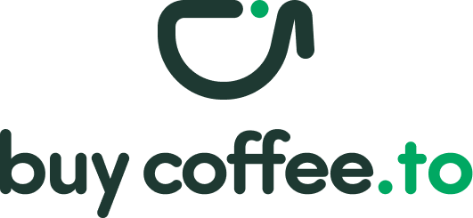

Darowizny i wsparcie fundacji
Dziękujemy, że stajecie z nami na Warcie!
Misją Fundacji Ostatnia Warta jest obecność przy drugim człowieku w najtrudniejszych chwilach życia – w samotności, terminalnej chorobie i w procesie odchodzenia. To szlachetne wyzwanie możemy realizować wyłącznie dzięki wsparciu ludzi o wielkich sercach. Każdy Twój gest ma znaczenie. Zapraszamy Cię – stań razem z nami na tej najważniejszej z wart. Wybierz dogodną dla siebie formę płatności lub zbiórki celowej.
Jak wesprzeć fundację
Tradycyjny Przelew Bankowy
WSPARCIE BEZ PROWIZJI
FUNDACJA "OSTATNIA WARTA"

Tytuł przelewu:
Darowizna na cele statutowe
Zrzutka.pl
Jedna z oficjalnych zbiórek statutowych Fundacji. Twoje wsparcie przeznaczymy bezpośrednio na finansowanie pomocy osobom opuszczonym i zmagającym się z ciężką diagnozą.
Przelew na telefon
Szybkie i bezpieczne wsparcie prosto z aplikacji Twojego banku (0% prowizji).
PayPal
Szybki i wygodny sposób wsparcia z dowolnego miejsca na świecie. Każde wsparcie pomaga nam docierać do osób opuszczonych i umożlwia wolontariuszom pełnienie warty.


Kawa dla wolontariusza
Prosty sposób wsparcia symboliczną kawą. Jedna taka kawa to często jeden dojazd wolontariusza do chorego.

Wspieraj podczas zakupów
Pomagaj nam bezpłatnie przy okazji codziennych zakupów online. Nic Cię to nie kosztuje, a sklepy przekazują nam ułamek wartości Twoich zakupów.
Kod QR do szybkiego przelewu w aplikacji Twojego Banku
Zeskanuj w aplikacji bankowej
Patronite
Zostań Patronem naszej warty. Regularne wsparcie pozwala nam docierać do osób opuszczonych i ciężko chorych oraz zapewniać obecność wolontariuszy.